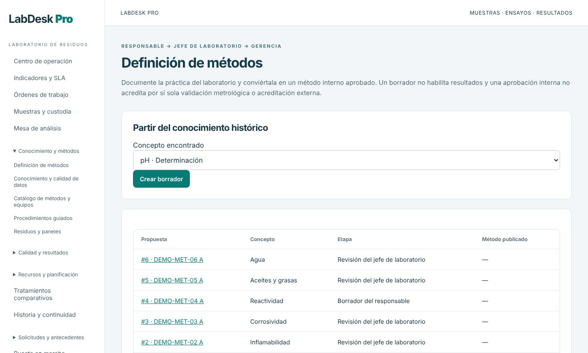
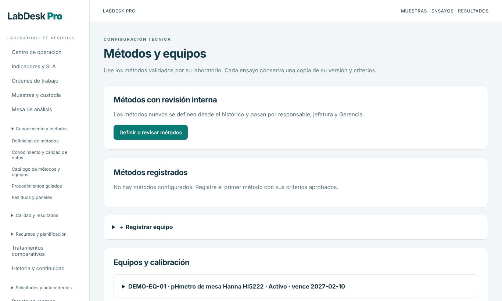
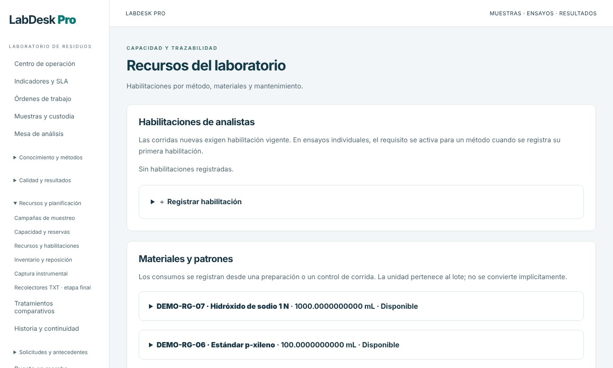
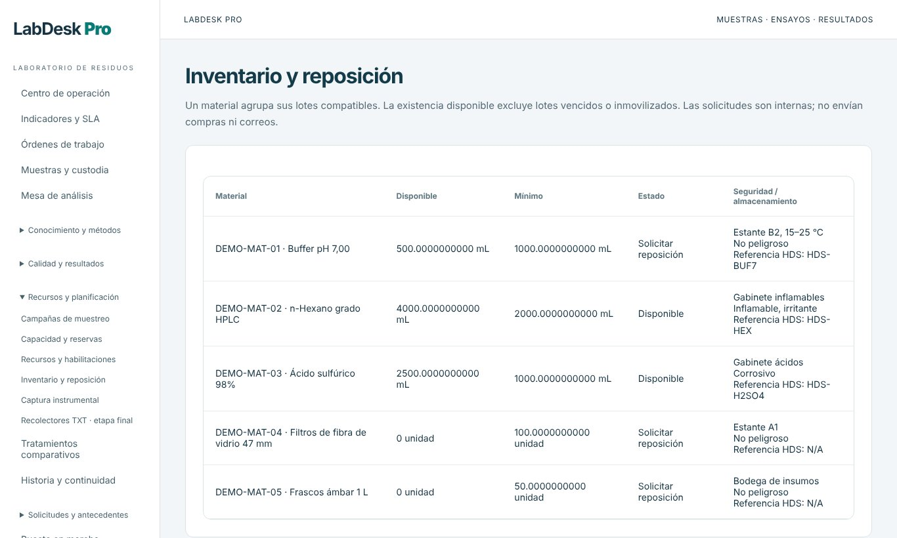
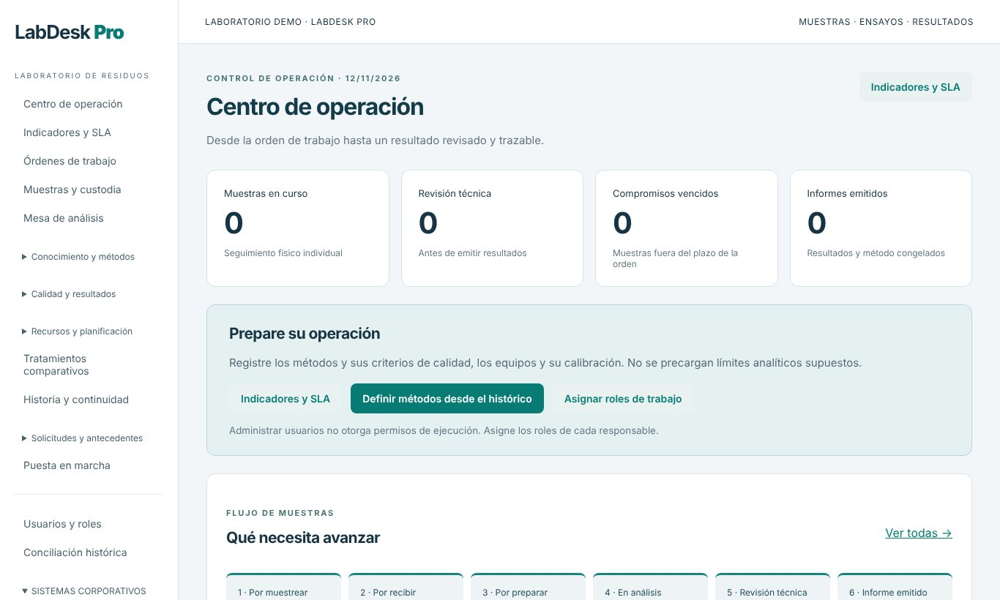
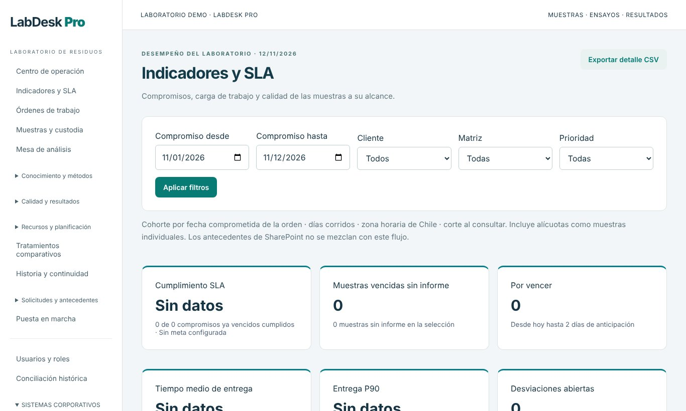
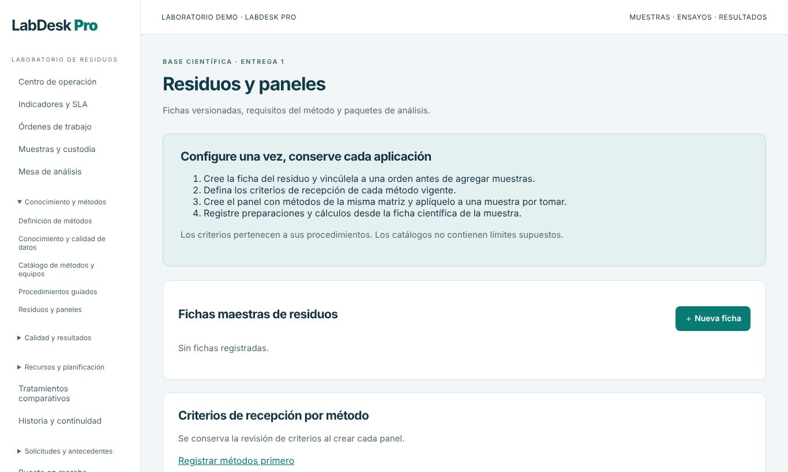
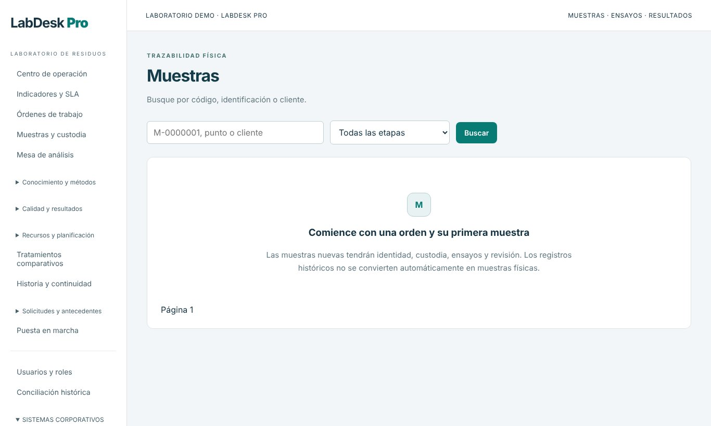
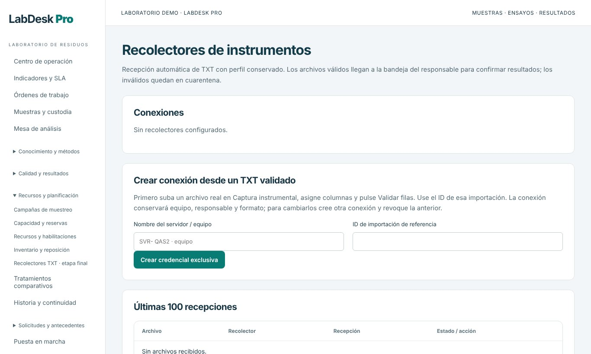

Órdenes de trabajo
Órdenes por cliente y residuo con alcance, prioridad y fecha comprometida, origen de las muestras y sus ensayos.
Cada muestra con identidad, custodia, ensayos, revisión técnica e informe congelado. Métodos aprobados, control de calidad estadístico, captura automática de instrumentos e indicadores de cumplimiento, con equipos, materiales e inventario bajo control.
portal.certidesk.cl/labdesk-proParte de IntegralFlex Suites
LabDesk Pro es el sistema de gestión de laboratorio (LIMS) de IntegralFlex Suites, diseñado para laboratorios de caracterización de residuos. Ordena el recorrido completo: la solicitud comercial o de producción, la orden de trabajo, la toma de muestras, la recepción con criterios por método, la preparación, el análisis, la revisión técnica y el informe emitido con resultados y método congelados.
La base científica se configura una vez: fichas maestras de residuos, métodos con sus criterios de calidad que pasan por responsable, jefatura y gerencia, paneles de análisis por matriz, equipos con calibración y habilitaciones de analistas. Las corridas multianalito, los lotes por técnica y los controles alimentan tendencias QC y control estadístico, y los recolectores reciben los TXT de los instrumentos con cuarentena para archivos inválidos.
La operación diaria se apoya en recursos controlados: equipos con calibración y mantención programada, materiales y patrones con lote y vencimiento, inventario con mínimos y solicitudes de reposición, y habilitaciones de analistas por método. Los indicadores miden el cumplimiento de los compromisos con cada cliente, y el acceso es con Microsoft 365 y roles por función, con segregación entre quien ejecuta, revisa y aprueba.
Órdenes por cliente y residuo con alcance, prioridad y fecha comprometida, origen de las muestras y sus ensayos.
Seguimiento individual por etapa: por muestrear, por recibir, por preparar, en análisis, revisión técnica, informe emitido, rechazo o disposición.
Carga de trabajo por analista, asignación de ensayos y reservas de capacidad de equipos y personas.
Definición de métodos con técnica, unidad, límites y control QC, con revisión del responsable, la jefatura y la gerencia, y procedimientos guiados publicados.
Fichas maestras de residuos versionadas, criterios de recepción por método y paneles de análisis aplicables a cada muestra.
Corridas multianalito, lotes por técnica con controles, tendencias QC y control estadístico de los resultados.
Límites validados por el responsable técnico para evaluar resultados y emitir informes con resultados y método congelados.
Registro de desviaciones por muestra con responsable, plazo y seguimiento de acciones correctivas.
Planes de muestreo periódicos asociados a una orden, con fechas e intervalos.
Equipos con calibración y habilitaciones vigentes de analistas, exigidas en las corridas nuevas.
Materiales con lotes, vencimientos y condiciones de almacenamiento, existencia disponible y solicitudes internas de reposición.
Recepción automática de archivos TXT de los equipos con perfil conservado, bandeja de confirmación y cuarentena de archivos inválidos.
Comparación de resultados de la muestra inicial y la tratada dentro de una misma orden.
Cumplimiento de compromisos, muestras vencidas y por vencer, tiempo medio y P90 de entrega y desviaciones abiertas, con exportación CSV.
Agenda de reservas de equipos y analistas por ensayo, para planificar la carga del laboratorio.
Inicio de sesión con Microsoft 365, sincronización de usuarios, roles por función (analista, muestreador, jefatura, responsable técnico) y auditoría.
Pantallas reales del sistema con datos de demostración: métodos, equipos y materiales son de ejemplo.









La solicitud comercial o de producción genera la orden de trabajo con sus muestras.
La muestra se toma, se recibe con criterios por método y queda bajo cadena de custodia.
Los analistas habilitados ejecutan los ensayos; los instrumentos envían sus resultados.
El control de calidad y la revisión técnica validan los resultados contra las especificaciones.
Se emite el informe con resultados y método congelados, y se miden los indicadores SLA.
Flask + PostgreSQL, interfaz web para laboratorio con política de seguridad estricta
Microsoft 365 (Entra ID y Graph), recolectores TXT de instrumentos y exportación CSV
Métodos aprobados, control estadístico, desviaciones y trazabilidad de cada resultado
Roles por función, sesiones protegidas, CSRF y auditoría de eventos
Desde USD 6,9 por usuario al mes según el tamaño de tu equipo. Cotiza en línea o escríbenos y coordinamos una demo con tus datos.